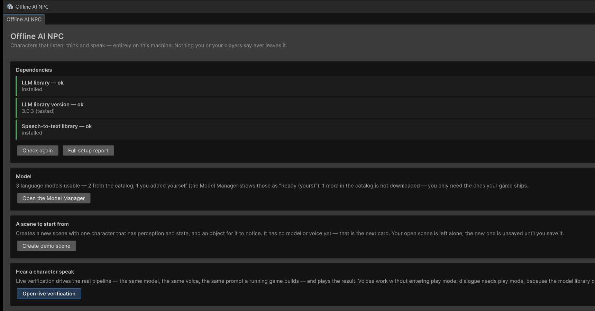
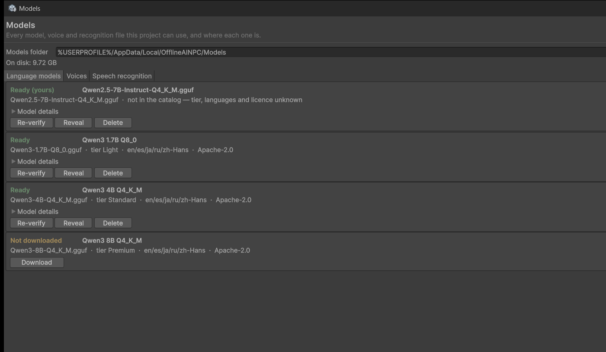

Getting started
From import to a character who answers out loud. Read Is this for your game? first if you have not — it takes two minutes and it is the page most likely to save you a refund.
0. The window that opens by itself
The first editor load after import opens Welcome — Tools ▸ Offline AI NPC ▸ Welcome if you want it back. It runs the checks on this page for you and links to the two windows below.

It shows once, on the first load, and never reappears — not after a recompile, not in the next project. It changes nothing in your project on its own: no Project Settings, no scene edits, no files. Everything it can do is behind a button you press.
Three cards, in the order the questions come up: are the dependencies installed, is there a model to talk to, and a scene to start from. If you would rather work from the pages, close it — nothing later depends on having used it.
1. Dependencies
Two, both external and free, neither bundled:
| Package id | Needed for | |
|---|---|---|
| LLM for Unity | ai.undream.llm | the language model. Required |
| whisper.unity | com.whisper.unity | speech input. Optional — typed input works without it |
The plugin compiles without either: the features that need them are compiled out through versionDefines. A missing dependency is a missing feature, never a compile error.
And there is no third one. Nothing else is required — not Newtonsoft.Json, which comparable plugins ask for and which this one deliberately does without. The reason is what a clean import looked like while it did depend on it: 36 compile errors before a single window could be opened, in any project that had not installed Newtonsoft for other reasons. The plugin reads its own JSON now (OfflineAINPC.Core.Serialization), so Assets/OfflineAINPC compiles in an empty project with nothing installed at all — verified by importing it into one.
LLM for Unity does need Newtonsoft, and declares it: installed as a package it arrives on its own, installed as an Asset Store folder you add com.unity.nuget.newtonsoft-json yourself. Either way that is its requirement, met once, and not something this package drags in on top.
2. A model
Tools ▸ Offline AI NPC ▸ Model Manager.

Each catalog entry states its tier, its languages and its licence before you download anything. [Ready] means the file is on disk and its header reads correctly — not merely that the download finished.
A file you dropped in yourself shows as [Manual]: usable, but the manager knows nothing about it beyond what it can read from the file, so the row says so instead of leaving the three fields blank. The Welcome window counts those separately for the same reason — "3 models ready" and "1 [Ready], 2 [Manual]" were the same three files described by two windows that disagreed.
Pick the preset for your language and tier and download it. The manager verifies the file against a hash, so a truncated download is caught before it is loaded rather than as a mysterious failure later. Presets carry their licence, and the default line-up is chosen to need no attribution in your shipping game.
If you already have a .gguf, put it in StreamingAssets and name it as the manifest expects.
3. A voice
Install Piper and put its folder somewhere your build can reach. Add at least one voice — both files, name.onnx and name.onnx.json. A missing .json gives you silence with no error, and it is the most common setup problem there is.
For Japanese you supply the engine — the package ships Piper only. VOICEVOX is the usual choice and connecting it is about eighty lines against one interface; the complete worked example is in Languages.
4. Check
Tools ▸ Offline AI NPC ▸ Check my setup.

Every line is a real check against your project, and a failing one says what to do rather than what went wrong. The example above is the most common failure there is: a voice the configuration points at is not on disk, which produces silence with no error.
It reports what is present, what is missing, and what to do about it — and where it cannot determine something, it says so instead of guessing. Fix anything red before continuing; every red item is something that would otherwise surface later as odd behaviour.
5. A character
Add to a GameObject in your scene:
- an
AudioSourcefor her voice, - your dialogue controller — copy the one in Dialogue (there is no runnable sample yet),
- optionally
NpcStateComponentandPerceptionQueryonce she works.
Give her a persona: who she is, how she speaks, a handful of facts. Keep it short. Everything in the system prompt is re-read on every turn, and a small model does better with five clear facts than with two paragraphs.
6. Speech recognition
Push-to-talk: start recording on key down, stop on key up, hand the transcript to your controller.
Two things that are not obvious and will cost you an evening each:
Silence is transcribed as words. Whisper hallucinates on an empty recording — "Thank you for watching" and similar. Gate on RMS and drop anything below a threshold, and filter the known phrases. Without this, a stray key press starts a conversation.
Any word can be a trigger. If you route on keywords, use word boundaries. A hallucinated fragment containing your trigger word inside another word will fire it.
7. Run it
Enter Play mode, hold the key, ask her something.
The first reply of a session takes about 2.1 s while the prompt cache fills; after that, around 2.0 s to the first word on the reference machine. If your first turn is slower than that, it is normal. If your tenth is, see Troubleshooting.
Adding your own assembly
If your game code lives in its own assembly definition, reference OfflineAINPC.Runtime:
{
"name": "MyGame.Characters",
"references": [ "OfflineAINPC.Runtime" ],
"autoReferenced": true
}For a test assembly alongside it:
{
"name": "MyGame.Characters.Tests",
"references": [ "MyGame.Characters", "OfflineAINPC.Runtime",
"UnityEngine.TestRunner", "UnityEditor.TestRunner" ],
"includePlatforms": [ "Editor" ],
"overrideReferences": true,
"precompiledReferences": [ "nunit.framework.dll" ],
"defineConstraints": [ "UNITY_INCLUDE_TESTS" ],
"autoReferenced": false
}OfflineAINPC.Runtime references nothing but the engine — not your game, not LLMUnity, not whisper.unity, and no third-party library. That is what makes it portable between projects, and it is why an import cannot fail on something you have not installed.
Where to go next
| You want | Page |
|---|---|
| A character who notices the room | Perception |
| Moods, needs, relationships | State — start at the short path |
| A character who does things | Actions |
| Another language | Languages |
| To know what will bite you | Limitations |